ChatGPT · Картинки и готовые промпты.
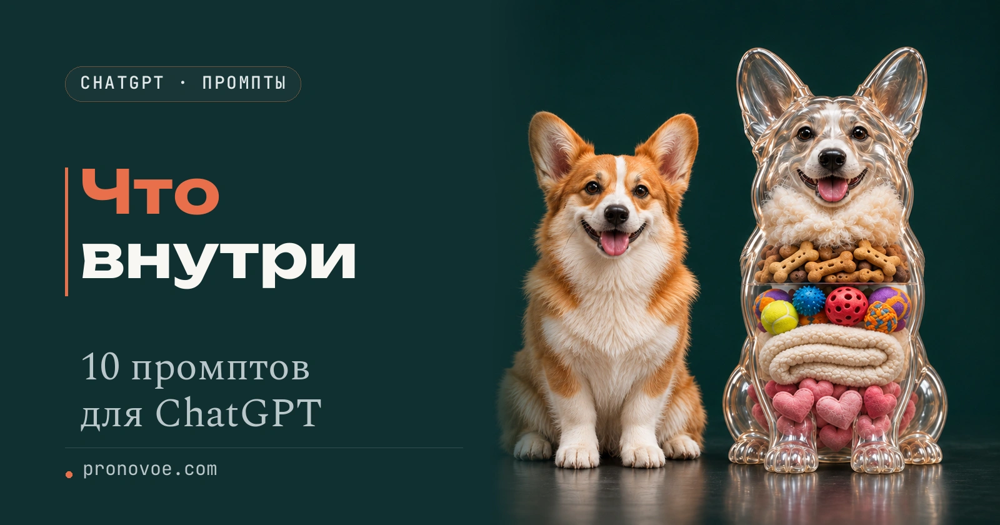
Прозрачные предметы в ChatGPT: 10 промптов на русском
Начальный уровень
С ChatGPT можно превратить фотографию товара, игрушки или питомца в наглядную картинку: слева останется привычный вид, а справа появится прозрачная оболочка с выбранным наполнением. Здесь собраны десять примеров и полные промпты на русском, чтобы повторить оформление со своим предметом, проверить подписи и сохранить результат.
Содержание статьи
Выбираем предмет и наполнение
Для первого изображения понадобится ChatGPT с доступной функцией создания картинок. Можно начать с текста готового примера. Если хочешь показать свой товар, питомца или себя, подготовь чёткую фотографию без обрезанных важных деталей.
Слева в кадре будет обычный предмет, справа тот же силуэт с прозрачной оболочкой. У продукта можно показать выбранные ингредиенты. У игрушки или персонажа внутри могут быть предметы, которые передают характер: мячики, книги, сердечки или кофе.
Высота слоёв не показывает пропорции. Примеры с продуктами иллюстрируют выбранные компоненты. Для конкретного товара сверяй их с этикеткой. Сердечки и игрушки внутри животных и людей являются художественным образом.
В квадратных скобках каждого промпта стоит содержание нашего примера. Чтобы поменять предмет, замени значения в этих полях: предмет, внешний вид, наполнение, подписи к слоям и нижнюю подпись. Остальная часть запроса сохраняет общий стиль серии.
Дополнительно: 72 промпта для фото товара и упаковки, если хочешь попробовать другие товарные кадры.
Создаём прозрачный предмет в ChatGPT
- Открой новый чат в ChatGPT. Для своего предмета прикрепи его фотографию к сообщению. Если хочешь повторить оформление, дополнительно прикрепи изображение выбранного примера ниже и напиши, какое фото задаёт внешний вид, а какое только оформление.
- Нажми «Скопировать» у нужного примера. Вставь весь промпт в поле сообщения. Для пробы оставь текст как есть, для своего объекта замени фрагмент в квадратных скобках.
- Отправь задание и дождись изображения. Если в ответе только описание, попроси: «Создай само изображение по этому заданию».
- Сравни обе половины. Должны совпадать форма и узнаваемые детали предмета, а выноски должны указывать на свои слои. Ниже есть запросы для точечных исправлений.
Результат: в ответе появится картинка с обычной и прозрачной версиями одного предмета.
Для серии используй один удачный кадр как образец света, фона и расположения текста. Создавай изображения по одному. Повторная генерация может менять детали, поэтому каждый слайд нужно просмотреть отдельно.
1. Салями
Колбаса в обычной оболочке рядом с прозрачной версией. Внутри видны мясо, шпик, соль, перец и пряности. Такой пример помогает задать один вытянутый силуэт и несколько разных фактур.
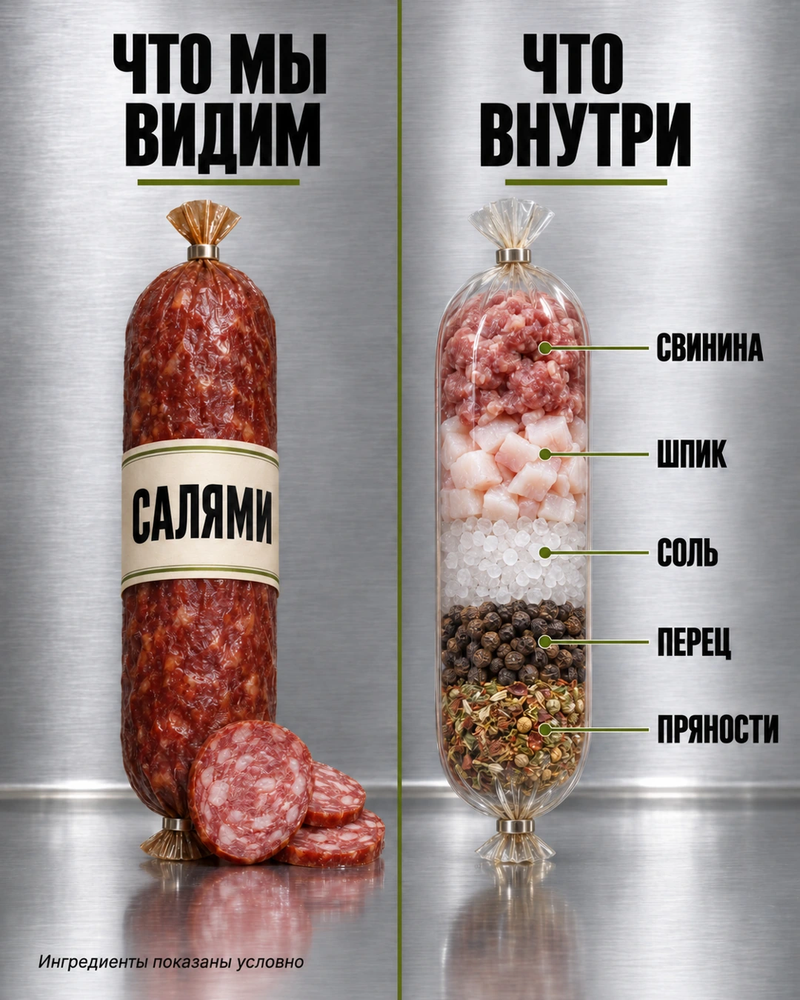

Замени то, что в скобках, на своё.
Создай один вертикальный слайд 4:5 в стиле реалистичной рекламной съёмки. Фон и стол из матовой нержавеющей стали, мягкий студийный свет, отражения под предметами. Раздели кадр тонкой оливковой вертикальной линией на две равные половины. Слева заголовок «ЧТО МЫ ВИДИМ», справа «ЧТО ВНУТРИ». Чёрный жирный узкий шрифт, под заголовками короткие оливковые линии. Каждый заголовок помещается в своей половине. Слева обычный предмет, справа его прозрачная версия с отдельными горизонтальными слоями. Размеры и положение обоих предметов согласованы. Справа от слоёв короткие русские подписи с тонкими оливковыми линиями и точками. Линии не пересекаются. Все буквы читаемые, надписи не обрезаны. Без интерфейса соцсети, чужих брендов и английских слов.
Предмет: [салями].
Обычная версия слева: [целая палка салями в тёмно-красной оболочке с кремовой этикеткой; несколько ломтиков у основания].
Наполнение прозрачной версии сверху вниз: [рубленая свинина; кубики шпика; крупная соль; перец горошком; сухие пряности].
Подписи к слоям в том же порядке: [СВИНИНА; ШПИК; СОЛЬ; ПЕРЕЦ; ПРЯНОСТИ].
Нижняя подпись: [Ингредиенты показаны условно].
Справа повтори силуэт и позу обычной версии, но сделай оболочку прозрачной. Не добавляй новых слоёв. Слои условные, их высота не показывает реальные пропорции. Для людей и животных не показывай органы или анатомический разрез.
Если приложена моя фотография, используй её как источник внешнего вида. Если приложен пример оформления, используй его только как образец композиции и света. Если вложений нет, создай картинку по описанию. Не добавляй чужие подписи. Создай само изображение.2. Чесночные сухарики
Слева закрытый пакет, справа прозрачная упаковка с хлебом, маслом, чесноком и солью. Укажи ингредиенты своего варианта, если используешь другую рецептуру.
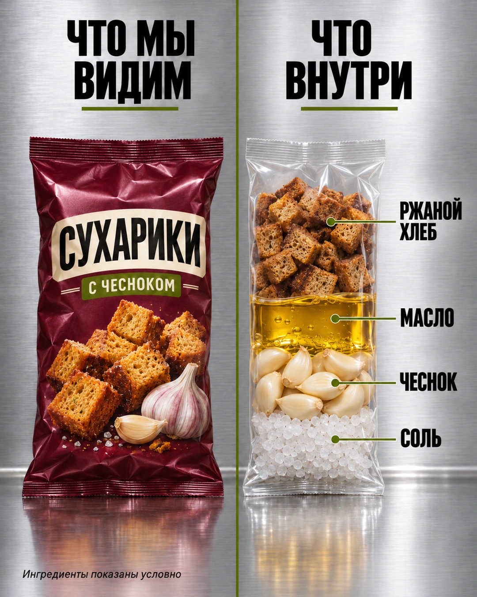

Замени то, что в скобках, на своё.
Создай один вертикальный слайд 4:5 в стиле реалистичной рекламной съёмки. Фон и стол из матовой нержавеющей стали, мягкий студийный свет, отражения под предметами. Раздели кадр тонкой оливковой вертикальной линией на две равные половины. Слева заголовок «ЧТО МЫ ВИДИМ», справа «ЧТО ВНУТРИ». Чёрный жирный узкий шрифт, под заголовками короткие оливковые линии. Каждый заголовок помещается в своей половине. Слева обычный предмет, справа его прозрачная версия с отдельными горизонтальными слоями. Размеры и положение обоих предметов согласованы. Справа от слоёв короткие русские подписи с тонкими оливковыми линиями и точками. Линии не пересекаются. Все буквы читаемые, надписи не обрезаны. Без интерфейса соцсети, чужих брендов и английских слов.
Предмет: [чесночные сухарики].
Обычная версия слева: [бордовый пакет с надписями СУХАРИКИ и С ЧЕСНОКОМ и изображением ржаных сухариков].
Наполнение прозрачной версии сверху вниз: [кубики ржаного хлеба; растительное масло; зубчики чеснока; крупная соль].
Подписи к слоям в том же порядке: [РЖАНОЙ ХЛЕБ; МАСЛО; ЧЕСНОК; СОЛЬ].
Нижняя подпись: [Ингредиенты показаны условно].
Справа повтори силуэт и позу обычной версии, но сделай оболочку прозрачной. Не добавляй новых слоёв. Слои условные, их высота не показывает реальные пропорции. Для людей и животных не показывай органы или анатомический разрез.
Если приложена моя фотография, используй её как источник внешнего вида. Если приложен пример оформления, используй его только как образец композиции и света. Если вложений нет, создай картинку по описанию. Не добавляй чужие подписи. Создай само изображение.3. Кукурузные чипсы
Треугольные чипсы на упаковке и три слоя компонентов в прозрачном пакете. Простое наполнение удобно, когда нужен крупный объект и немного выносок.
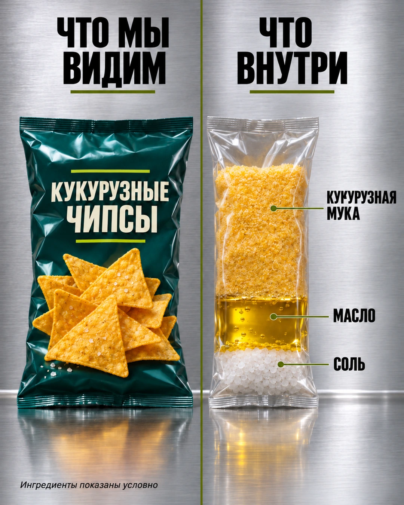

Замени то, что в скобках, на своё.
Создай один вертикальный слайд 4:5 в стиле реалистичной рекламной съёмки. Фон и стол из матовой нержавеющей стали, мягкий студийный свет, отражения под предметами. Раздели кадр тонкой оливковой вертикальной линией на две равные половины. Слева заголовок «ЧТО МЫ ВИДИМ», справа «ЧТО ВНУТРИ». Чёрный жирный узкий шрифт, под заголовками короткие оливковые линии. Каждый заголовок помещается в своей половине. Слева обычный предмет, справа его прозрачная версия с отдельными горизонтальными слоями. Размеры и положение обоих предметов согласованы. Справа от слоёв короткие русские подписи с тонкими оливковыми линиями и точками. Линии не пересекаются. Все буквы читаемые, надписи не обрезаны. Без интерфейса соцсети, чужих брендов и английских слов.
Предмет: [кукурузные чипсы].
Обычная версия слева: [тёмно-бирюзовый пакет с надписью КУКУРУЗНЫЕ ЧИПСЫ и золотистыми треугольными чипсами].
Наполнение прозрачной версии сверху вниз: [кукурузная мука; растительное масло; крупная соль].
Подписи к слоям в том же порядке: [КУКУРУЗНАЯ МУКА; МАСЛО; СОЛЬ].
Нижняя подпись: [Ингредиенты показаны условно].
Справа повтори силуэт и позу обычной версии, но сделай оболочку прозрачной. Не добавляй новых слоёв. Слои условные, их высота не показывает реальные пропорции. Для людей и животных не показывай органы или анатомический разрез.
Если приложена моя фотография, используй её как источник внешнего вида. Если приложен пример оформления, используй его только как образец композиции и света. Если вложений нет, создай картинку по описанию. Не добавляй чужие подписи. Создай само изображение.4. Кетчуп
Одна форма бутылки связывает обе половины. Справа томатная паста, вода, сахар, уксус, соль и пряности. Если работаешь с конкретным кетчупом, возьми состав с его этикетки.
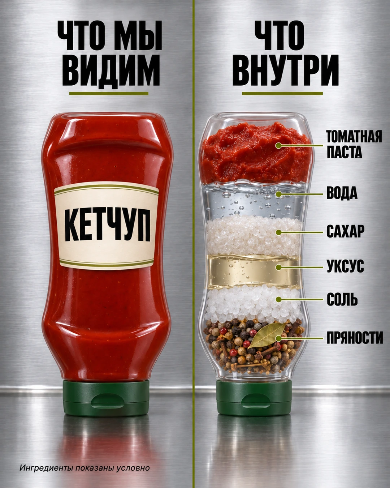

Замени то, что в скобках, на своё.
Создай один вертикальный слайд 4:5 в стиле реалистичной рекламной съёмки. Фон и стол из матовой нержавеющей стали, мягкий студийный свет, отражения под предметами. Раздели кадр тонкой оливковой вертикальной линией на две равные половины. Слева заголовок «ЧТО МЫ ВИДИМ», справа «ЧТО ВНУТРИ». Чёрный жирный узкий шрифт, под заголовками короткие оливковые линии. Каждый заголовок помещается в своей половине. Слева обычный предмет, справа его прозрачная версия с отдельными горизонтальными слоями. Размеры и положение обоих предметов согласованы. Справа от слоёв короткие русские подписи с тонкими оливковыми линиями и точками. Линии не пересекаются. Все буквы читаемые, надписи не обрезаны. Без интерфейса соцсети, чужих брендов и английских слов.
Предмет: [кетчуп].
Обычная версия слева: [красная бутылка с зелёной крышкой внизу и кремовой этикеткой КЕТЧУП].
Наполнение прозрачной версии сверху вниз: [томатная паста; вода; сахар; уксус; соль; цельные пряности].
Подписи к слоям в том же порядке: [ТОМАТНАЯ ПАСТА; ВОДА; САХАР; УКСУС; СОЛЬ; ПРЯНОСТИ].
Нижняя подпись: [Ингредиенты показаны условно].
Справа повтори силуэт и позу обычной версии, но сделай оболочку прозрачной. Не добавляй новых слоёв. Слои условные, их высота не показывает реальные пропорции. Для людей и животных не показывай органы или анатомический разрез.
Если приложена моя фотография, используй её как источник внешнего вида. Если приложен пример оформления, используй его только как образец композиции и света. Если вложений нет, создай картинку по описанию. Не добавляй чужие подписи. Создай само изображение.5. Рыбные палочки
На упаковке золотистая панировка и белое филе в разломе. Прозрачная версия показывает выбранные основные компоненты по отдельности.
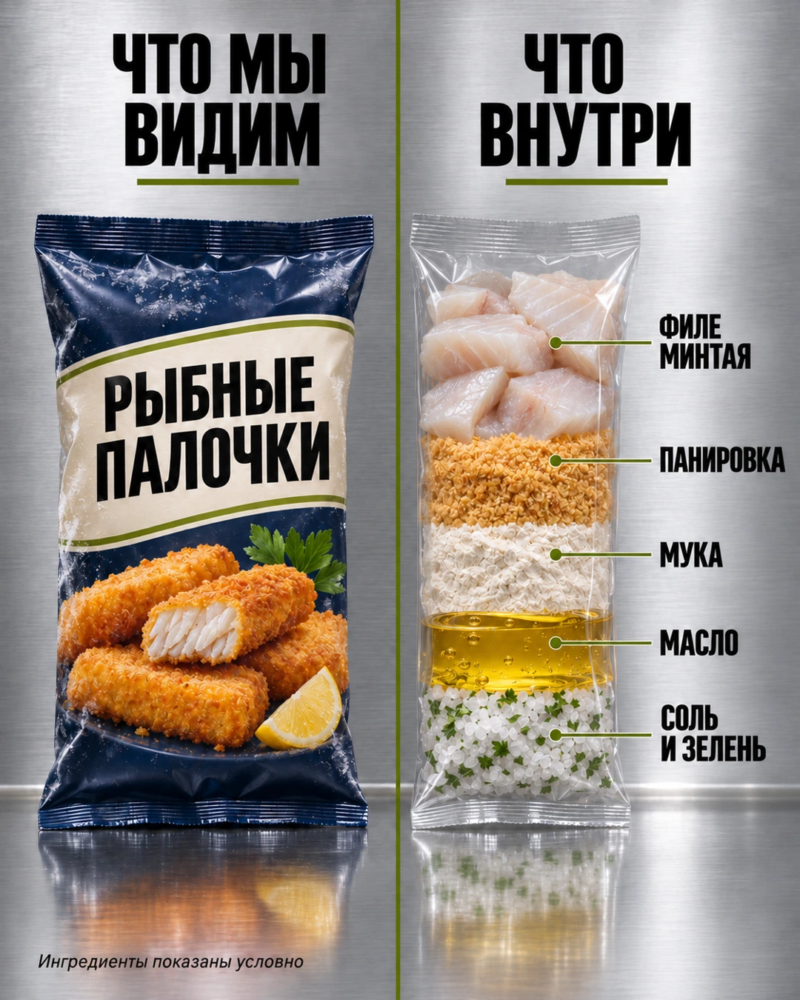

Замени то, что в скобках, на своё.
Создай один вертикальный слайд 4:5 в стиле реалистичной рекламной съёмки. Фон и стол из матовой нержавеющей стали, мягкий студийный свет, отражения под предметами. Раздели кадр тонкой оливковой вертикальной линией на две равные половины. Слева заголовок «ЧТО МЫ ВИДИМ», справа «ЧТО ВНУТРИ». Чёрный жирный узкий шрифт, под заголовками короткие оливковые линии. Каждый заголовок помещается в своей половине. Слева обычный предмет, справа его прозрачная версия с отдельными горизонтальными слоями. Размеры и положение обоих предметов согласованы. Справа от слоёв короткие русские подписи с тонкими оливковыми линиями и точками. Линии не пересекаются. Все буквы читаемые, надписи не обрезаны. Без интерфейса соцсети, чужих брендов и английских слов.
Предмет: [рыбные палочки].
Обычная версия слева: [тёмно-синий пакет с надписью РЫБНЫЕ ПАЛОЧКИ и изображением палочек в золотистой панировке с белым филе на разломе].
Наполнение прозрачной версии сверху вниз: [филе минтая; панировочные сухари; мука; растительное масло; соль с зеленью].
Подписи к слоям в том же порядке: [ФИЛЕ МИНТАЯ; ПАНИРОВКА; МУКА; МАСЛО; СОЛЬ И ЗЕЛЕНЬ].
Нижняя подпись: [Ингредиенты показаны условно].
Справа повтори силуэт и позу обычной версии, но сделай оболочку прозрачной. Не добавляй новых слоёв. Слои условные, их высота не показывает реальные пропорции. Для людей и животных не показывай органы или анатомический разрез.
Если приложена моя фотография, используй её как источник внешнего вида. Если приложен пример оформления, используй его только как образец композиции и света. Если вложений нет, создай картинку по описанию. Не добавляй чужие подписи. Создай само изображение.6. Смесь для какао
Здесь показана сладкая смесь для напитка, а не чистый какао-порошок. Внутри условные слои сахара, какао и ароматизатора. Для другого продукта сначала проверь его состав.
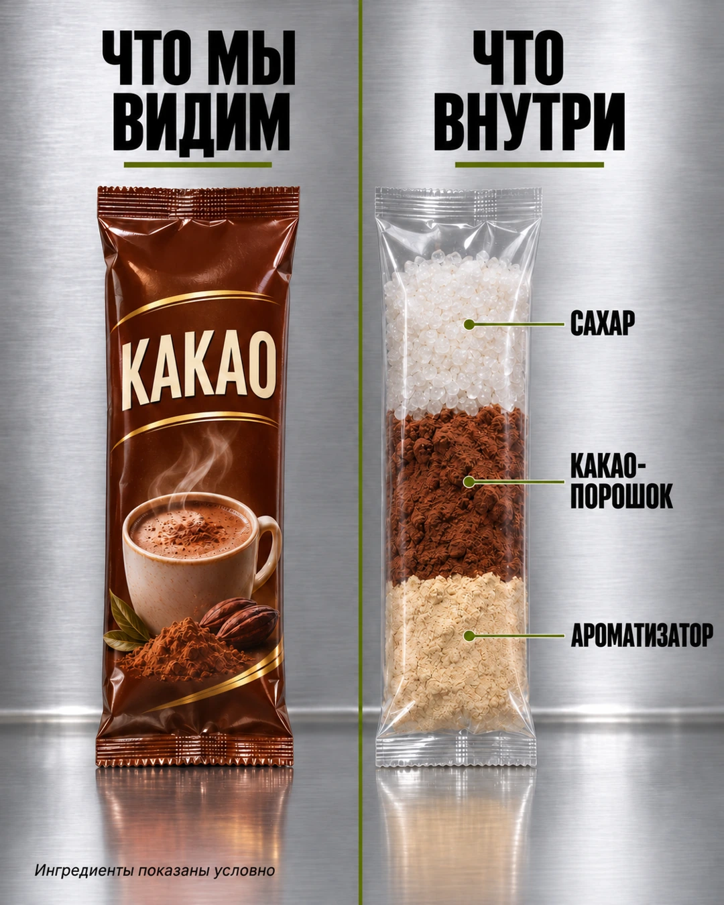

Замени то, что в скобках, на своё.
Создай один вертикальный слайд 4:5 в стиле реалистичной рекламной съёмки. Фон и стол из матовой нержавеющей стали, мягкий студийный свет, отражения под предметами. Раздели кадр тонкой оливковой вертикальной линией на две равные половины. Слева заголовок «ЧТО МЫ ВИДИМ», справа «ЧТО ВНУТРИ». Чёрный жирный узкий шрифт, под заголовками короткие оливковые линии. Каждый заголовок помещается в своей половине. Слева обычный предмет, справа его прозрачная версия с отдельными горизонтальными слоями. Размеры и положение обоих предметов согласованы. Справа от слоёв короткие русские подписи с тонкими оливковыми линиями и точками. Линии не пересекаются. Все буквы читаемые, надписи не обрезаны. Без интерфейса соцсети, чужих брендов и английских слов.
Предмет: [смесь для какао].
Обычная версия слева: [коричневый пакетик с золотыми деталями, надписью КАКАО и чашкой напитка на упаковке].
Наполнение прозрачной версии сверху вниз: [сахар; какао-порошок; светлый порошкообразный ароматизатор].
Подписи к слоям в том же порядке: [САХАР; КАКАО-ПОРОШОК; АРОМАТИЗАТОР].
Нижняя подпись: [Ингредиенты показаны условно].
Справа повтори силуэт и позу обычной версии, но сделай оболочку прозрачной. Не добавляй новых слоёв. Слои условные, их высота не показывает реальные пропорции. Для людей и животных не показывай органы или анатомический разрез.
Если приложена моя фотография, используй её как источник внешнего вида. Если приложен пример оформления, используй его только как образец композиции и света. Если вложений нет, создай картинку по описанию. Не добавляй чужие подписи. Создай само изображение.7. Молочный шоколад
Открытая плитка делает продукт узнаваемым ещё до чтения надписи. На правой стороне видны выбранные компоненты молочного шоколада, каждый со своей фактурой.
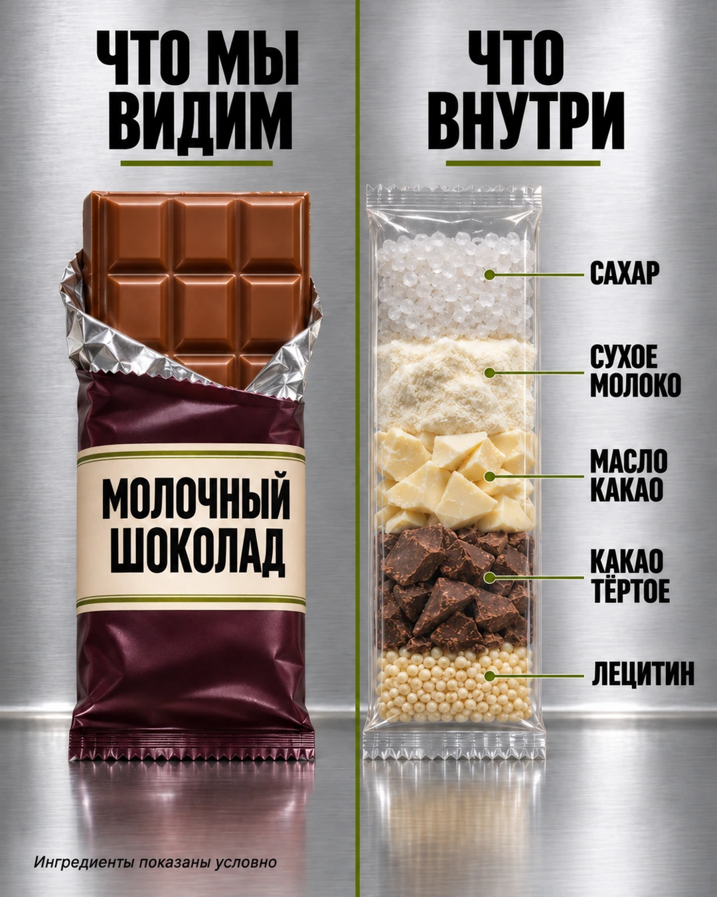

Замени то, что в скобках, на своё.
Создай один вертикальный слайд 4:5 в стиле реалистичной рекламной съёмки. Фон и стол из матовой нержавеющей стали, мягкий студийный свет, отражения под предметами. Раздели кадр тонкой оливковой вертикальной линией на две равные половины. Слева заголовок «ЧТО МЫ ВИДИМ», справа «ЧТО ВНУТРИ». Чёрный жирный узкий шрифт, под заголовками короткие оливковые линии. Каждый заголовок помещается в своей половине. Слева обычный предмет, справа его прозрачная версия с отдельными горизонтальными слоями. Размеры и положение обоих предметов согласованы. Справа от слоёв короткие русские подписи с тонкими оливковыми линиями и точками. Линии не пересекаются. Все буквы читаемые, надписи не обрезаны. Без интерфейса соцсети, чужих брендов и английских слов.
Предмет: [молочный шоколад].
Обычная версия слева: [плитка молочного шоколада в частично открытой сливовой упаковке с кремовой этикеткой МОЛОЧНЫЙ ШОКОЛАД].
Наполнение прозрачной версии сверху вниз: [сахар; сухое цельное молоко; светлые кусочки масла какао; тёмные кусочки какао тёртого; светлые гранулы лецитина].
Подписи к слоям в том же порядке: [САХАР; СУХОЕ МОЛОКО; МАСЛО КАКАО; КАКАО ТЁРТОЕ; ЛЕЦИТИН].
Нижняя подпись: [Ингредиенты показаны условно].
Справа повтори силуэт и позу обычной версии, но сделай оболочку прозрачной. Не добавляй новых слоёв. Слои условные, их высота не показывает реальные пропорции. Для людей и животных не показывай органы или анатомический разрез.
Если приложена моя фотография, используй её как источник внешнего вида. Если приложен пример оформления, используй его только как образец композиции и света. Если вложений нет, создай картинку по описанию. Не добавляй чужие подписи. Создай само изображение.8. Плюшевый зайчик
Здесь можно отойти от ингредиентов. Прозрачный зайчик наполнен пухом, звёздами, помпонами и сердечками. Каждый предмет связан с короткой подписью о характере.
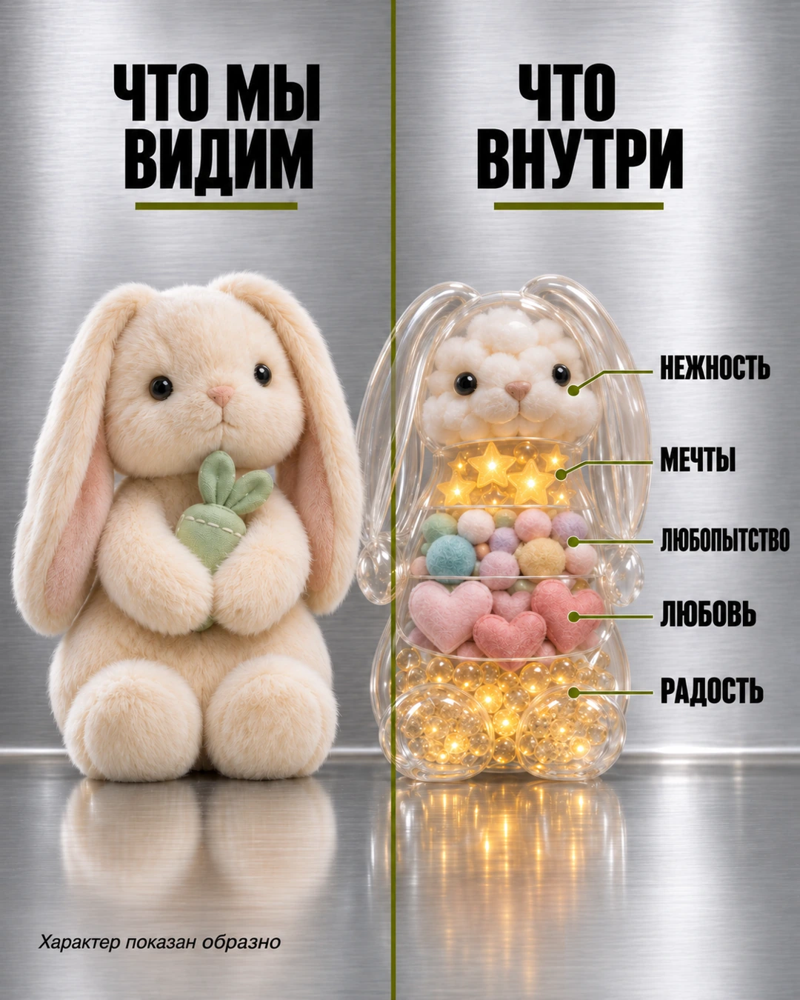

Замени то, что в скобках, на своё.
Создай один вертикальный слайд 4:5 в стиле реалистичной рекламной съёмки. Фон и стол из матовой нержавеющей стали, мягкий студийный свет, отражения под предметами. Раздели кадр тонкой оливковой вертикальной линией на две равные половины. Слева заголовок «ЧТО МЫ ВИДИМ», справа «ЧТО ВНУТРИ». Чёрный жирный узкий шрифт, под заголовками короткие оливковые линии. Каждый заголовок помещается в своей половине. Слева обычный предмет, справа его прозрачная версия с отдельными горизонтальными слоями. Размеры и положение обоих предметов согласованы. Справа от слоёв короткие русские подписи с тонкими оливковыми линиями и точками. Линии не пересекаются. Все буквы читаемые, надписи не обрезаны. Без интерфейса соцсети, чужих брендов и английских слов.
Предмет: [плюшевый зайчик].
Обычная версия слева: [кремовый зайчик с длинными висячими ушами, чёрными глазами, розовым носом и тканевой морковкой].
Наполнение прозрачной версии сверху вниз: [мягкий пух; золотые звёзды; пастельные помпоны; розовые сердечки; золотистые бусины].
Подписи к слоям в том же порядке: [НЕЖНОСТЬ; МЕЧТЫ; ЛЮБОПЫТСТВО; ЛЮБОВЬ; РАДОСТЬ].
Нижняя подпись: [Наполнение показано образно].
Справа повтори силуэт и позу обычной версии, но сделай оболочку прозрачной. Не добавляй новых слоёв. Слои условные, их высота не показывает реальные пропорции. Для людей и животных не показывай органы или анатомический разрез.
Если приложена моя фотография, используй её как источник внешнего вида. Если приложен пример оформления, используй его только как образец композиции и света. Если вложений нет, создай картинку по описанию. Не добавляй чужие подписи. Создай само изображение.Дополнительно: промпты для игрушек и персонажей, если нужен другой образ для своей подборки.
9. Корги
Сохраняются уши, мордочка и сидячая поза собаки. Вместо анатомии внутри лакомства, мячики, плед и сердечки. Для своего питомца приложи его фотографию и назови узнаваемые детали.
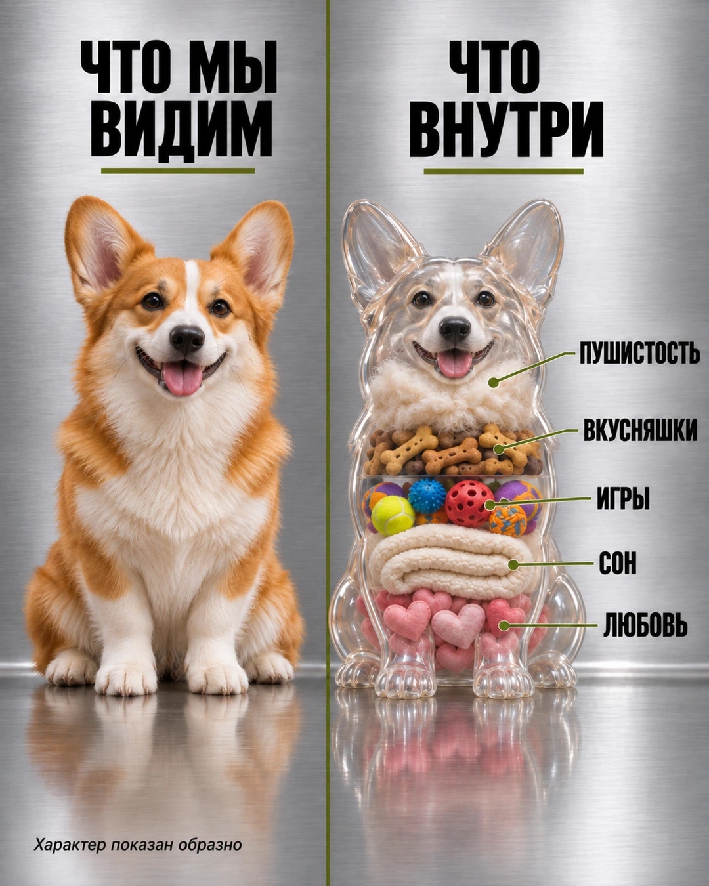

Замени то, что в скобках, на своё.
Создай один вертикальный слайд 4:5 в стиле реалистичной рекламной съёмки. Фон и стол из матовой нержавеющей стали, мягкий студийный свет, отражения под предметами. Раздели кадр тонкой оливковой вертикальной линией на две равные половины. Слева заголовок «ЧТО МЫ ВИДИМ», справа «ЧТО ВНУТРИ». Чёрный жирный узкий шрифт, под заголовками короткие оливковые линии. Каждый заголовок помещается в своей половине. Слева обычный предмет, справа его прозрачная версия с отдельными горизонтальными слоями. Размеры и положение обоих предметов согласованы. Справа от слоёв короткие русские подписи с тонкими оливковыми линиями и точками. Линии не пересекаются. Все буквы читаемые, надписи не обрезаны. Без интерфейса соцсети, чужих брендов и английских слов.
Предмет: [корги].
Обычная версия слева: [рыже-белый корги сидит лицом к зрителю, большие стоячие уши, короткие лапы и дружелюбная мордочка].
Наполнение прозрачной версии сверху вниз: [пушистая шерсть; собачьи лакомства; цветные мячики; мягкий плед; розовые сердечки].
Подписи к слоям в том же порядке: [ПУШИСТОСТЬ; ВКУСНЯШКИ; ИГРЫ; СОН; ЛЮБОВЬ].
Нижняя подпись: [Наполнение показано образно].
Справа повтори силуэт и позу обычной версии, но сделай оболочку прозрачной. Не добавляй новых слоёв. Слои условные, их высота не показывает реальные пропорции. Для людей и животных не показывай органы или анатомический разрез.
Если приложена моя фотография, используй её как источник внешнего вида. Если приложен пример оформления, используй его только как образец композиции и света. Если вложений нет, создай картинку по описанию. Не добавляй чужие подписи. Создай само изображение.10. Девушка-креатор
В примере вымышленная девушка. Лампочки, книги, фотоаппарат и кофе передают занятия и увлечения. Для своего портрета выбери наполнение, которое относится к тебе, и приложи своё фото.
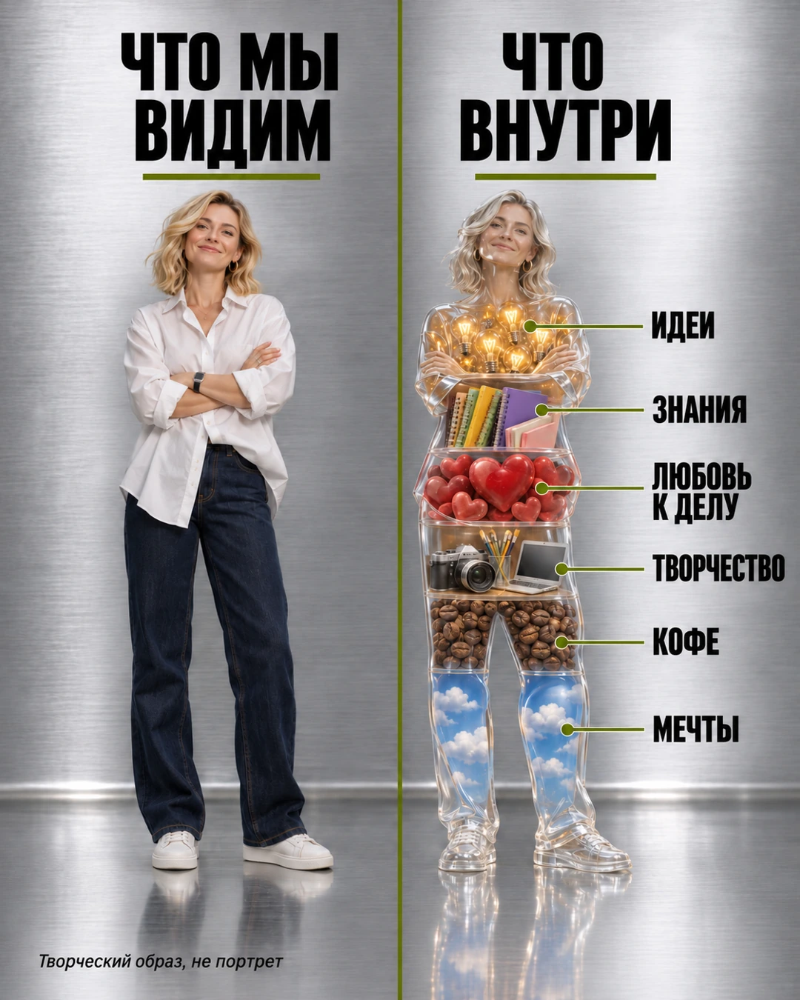

Замени то, что в скобках, на своё.
Создай один вертикальный слайд 4:5 в стиле реалистичной рекламной съёмки. Фон и стол из матовой нержавеющей стали, мягкий студийный свет, отражения под предметами. Раздели кадр тонкой оливковой вертикальной линией на две равные половины. Слева заголовок «ЧТО МЫ ВИДИМ», справа «ЧТО ВНУТРИ». Чёрный жирный узкий шрифт, под заголовками короткие оливковые линии. Каждый заголовок помещается в своей половине. Слева обычный предмет, справа его прозрачная версия с отдельными горизонтальными слоями. Размеры и положение обоих предметов согласованы. Справа от слоёв короткие русские подписи с тонкими оливковыми линиями и точками. Линии не пересекаются. Все буквы читаемые, надписи не обрезаны. Без интерфейса соцсети, чужих брендов и английских слов.
Предмет: [девушка-креатор].
Обычная версия слева: [вымышленная светловолосая девушка около 35 лет, белая рубашка, тёмные джинсы и белые кеды, стоит в полный рост со скрещёнными руками].
Наполнение прозрачной версии сверху вниз: [светящиеся лампочки; книги и блокноты; красные сердечки; фотоаппарат и ноутбук; кофейные зёрна; голубое небо с облаками].
Подписи к слоям в том же порядке: [ИДЕИ; ЗНАНИЯ; ЛЮБОВЬ К ДЕЛУ; ТВОРЧЕСТВО; КОФЕ; МЕЧТЫ].
Нижняя подпись: [Наполнение показано образно].
Справа повтори силуэт и позу обычной версии, но сделай оболочку прозрачной. Не добавляй новых слоёв. Слои условные, их высота не показывает реальные пропорции. Для людей и животных не показывай органы или анатомический разрез.
Если приложена моя фотография, используй её как источник внешнего вида. Если приложен пример оформления, используй его только как образец композиции и света. Если вложений нет, создай картинку по описанию. Не добавляй чужие подписи. Создай само изображение.Исправляем надписи и лишние детали
Если одна подпись написана неверно, укажи точное слово. Если состав не совпадает с заданием, перечисли нужные компоненты ещё раз. Исправляй одну проблему за сообщение и проверяй, что остальная картинка сохранилась.
Замени то, что в скобках, на своё.
Исправь на изображении только надпись [СУХОЕ МОЛОКО]. Напиши её точно так, как указано в квадратных скобках. Сохрани предметы, слои, свет, композицию и остальные подписи.Замени то, что в скобках, на своё.
Оставь в прозрачной версии только эти слои сверху вниз: [ржаной хлеб, растительное масло, чеснок, соль]. Удали остальные добавленные компоненты. Каждая выноска должна указывать на соответствующий слой. Сохрани фон, форму упаковки и левую половину изображения.Если буквы продолжают искажаться, попроси версию без надписей и добавь текст в своём графическом редакторе. Если нужны точные доли состава, сделай схему в редакторе: нейросеть рисует слои на глаз.
Проверяем и сохраняем изображение
- Предмет узнаваем и целиком помещается в кадр.
- Обычная и прозрачная версии совпадают по форме.
- Все слова написаны правильно, выноски не пересекают подписи.
- Внутри только те компоненты или предметы, которые перечислены в промпте.
- Картинка не выдаёт художественное наполнение за анатомию или точные пропорции продукта.
Открой изображение в ChatGPT и выбери сохранение или скачивание. Открой полученный файл и ещё раз проверь края, мелкие буквы и узнаваемые детали. Для карусели используй один формат, например 4:5 и 1080×1350, без обрезки надписей.
Результат: у тебя есть сохранённый файл с проверенными подписями, который можно включить в свою подборку.
Частые вопросы
Нужна ли своя фотография?
Для повторения готового примера можно начать с его текстового описания. Фото нужно, когда важен внешний вид именно твоего предмета, питомца или человека.
Получится ли точная копия примера?
Повторная генерация может изменить детали. Промпт задаёт композицию, свет, материал оболочки и наполнение, но не гарантирует совпадение каждого элемента.
Что менять в промпте для своего предмета?
Замени содержимое квадратных скобок: опиши предмет, перечисли его наполнение и укажи точные подписи. Сохрани общую часть с композицией и оформлением.
Можно ли показывать состав настоящего продукта?
Можно использовать ингредиенты с его этикетки. Не выдавай высоту художественных слоёв за реальные доли и не добавляй компоненты по догадке.
Почему ChatGPT не создаёт картинку?
Уточни, что нужно создать изображение, а не написать описание. Если сервис сообщает об ограничении или недоступности функции, ориентируйся на сообщение в своём аккаунте.
Продолжаем работу с изображениями
Чтобы попробовать другое оформление того же товара, открой восемь стилей рекламы из фото товара. Там меняются фон, свет и графика вокруг упаковки.
Официальная справка OpenAI по изображениям в ChatGPT объясняет создание, редактирование и сохранение картинок. Читать её не обязательно: всё нужное для промптов уже здесь.
Картинки можно использовать в карточках товара или в подборке для блога. Когда понадобится собрать из них страницу предложения и связать её с заявками, пригодится работа с ИИ-агентами. Ниже можно посмотреть, какие задачи они помогают решать без знания кода.
Что можно делать с нейросетями, если не знаешь кода?
Чтобы почувствовать размах, посмотри Концентрат Ивана Сергеева в записи. ИИ-агенты на твоих глазах собирают продукт, контент, сайты и воронки без кода. Это основа под любую цель: свои услуги, партнёрка, чужой бизнес. Три вечера в записи, промпты и четыре скилла. 990 ₽ один раз. Доступ на 14 дней после оплаты.
Забрать КонцентратУже знаешь, чего хочешь? Тогда в мастер-группу Ивана: система продаж на ИИ без продюсера и технаря, сопровождение и сообщество
Заполнить анкету предзаписиНабор открывается редко, кто записался заранее, получает лучшую цену и бонусы. Платить сейчас не нужно
Реклама. ИП Сергеев И. С., ИНН 352511695540. erid: 2Vtzqwfc8iA